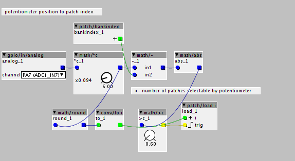
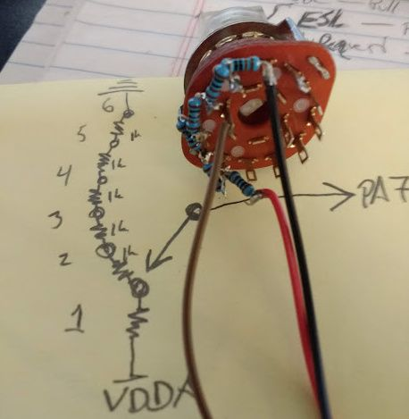
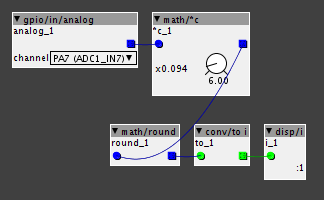
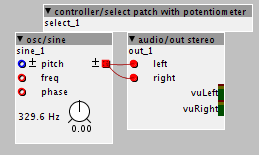
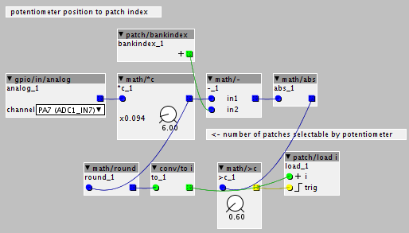
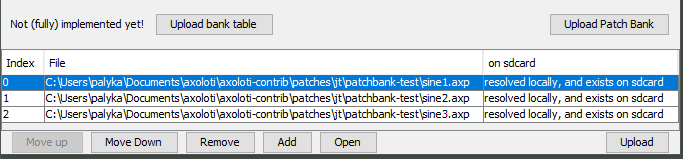
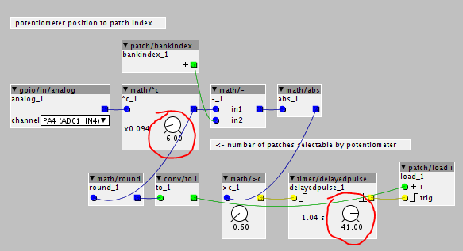
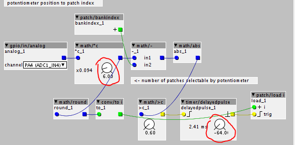
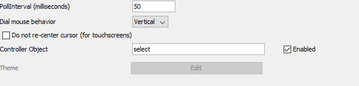
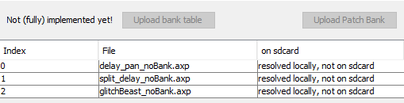

Hi all,
Is it possible for me to connect a rotary switch for selecting my synths/sounds in a live situation? or even adding a bank of buttons?
If so how do I do it? I've got just about all my parts ready to put into an enclosure so I am really on the cusp because I want to select different sounds live.
Rotary Switch for selecting programs
mlbstrd
#3
I've been wondering this exact thing, haven't seen anyone talk about switching patches on the fly. Following!
lokki
#4
there are two things you can do. switching patches via a controller object, see here:
or you can use a preset manager to store different presets of the same patch, see here:
watamacha
#5
also I think you can tell a subpatch object to inheret its parameters from its parent object, which should give a way of using a single preset_manager at the patch level to do all the work. Not sure since I havent really used either one.
lokki
#6
yes you can. in my experience the preset manager gets "glitchy" (as in not always working reliably, sometimes even crashing the board) when using sub patches too extensively.
Thanks for the ideas, I know its asking a lot but could someone draw me a diagram explaining how this is done, I've looked all over the editor, but cannot see how its done, also on the note of rotary switches, theres loads of different types, 2 pole, 3 pole, 4 pole etc how do I know what to choose? and all those solder taps, do I connect them up using ground? or some other way, I am just confused, all help is really gratefully received.
damonp
#8
About to mess with this but just want to make sure Im barking up the right tree...
So if I have a 6 position 2 pole rotary switch with one side loaded with the same resistor and the other side loaded with LEDs, both poles connected to VCC:
{kind=link}
and I run this:

I will be able to select 1 of 6 patches at a time with a corresponding LED indicator.
Savvy?
Hi damonp
Thanks for that, it looks like what I'm after, I'll give it a bash when I get more time, currently busy recording at the moment so not had a lot of time to experiment with the axoloti.
Thank you so much, your a star.
Sean
damonp
#10
Correction:

The Int in the lower right should count 0-5

testRotarySwitch.axp (1.6 KB)
Issues using controller/select patch with potentiometer
damonp
#11
Ok, I got it fully working...
Its really confusing, but I think I can help.
So, once the rotary switch is working, do the following:
open the files sine1, sine2 and sine3 from Documents\axoloti\axoloti-contrib\patches\jt\patchbank-test
add the controller/select patch with potentiometer object like this:
open it and make sure the number of patches is set to 6 and the channel is correct
Copy that to the other 2 sine files and a new one with nothing else in it
Save the new one with only the controller patch in it as "start" or something
Open a patch bank.
Add the 3 sine files to the bank and upload them so you have this:
click Upload bank table.
Load "start" to SD Card as startup
Done.
Now power the device without being connected to USB and switch positions 0,1,2 should each have a separate tone. when you hit the 4th position it will crash because you have nothing loaded in slot 4, lesson learned.
Anyway, it took me a bit to figure the nuances of that out so I figured Id save you the trouble and give you a specific step by step.
dark_angeluk1
#12
WOW
damonp, that was such a generous thing to do  I cannot thank you enough, not only have you told me what to do, you've also sent pictures and files, but also worked out any bugs I might encounter now I can go on stage and play my faux Polymoog
I cannot thank you enough, not only have you told me what to do, you've also sent pictures and files, but also worked out any bugs I might encounter now I can go on stage and play my faux Polymoog
I am not sure how I can send you the files to the synth build as a thanks.
but what I've done is make Vox Humana and several files for high pass filter sweeping pads using the same setup and also several pads, so I can go out live with a Vox Humana without the insulting cost of buying a polymoog 
once again thank you very much, I will let you know once I get it setup.
Sean
damonp
#14
did you actually get this to work?
I finally got to the point I wanted to use it and Im stuck... I just posted this:
damonp
#15
UPDATE...
I was unaware there is a smarter way to do this now... Here are the new instructions:
1. Open this patch startup-select.axp (3.5 KB)
2. Set math/*c to the number of switch positions (6 for me), and timer/delayedpulse to 41 (1.04s)
3. Upload to SDCard as startup.
4. Copy this subpatch to your objects folder (user\Documents\axoloti\objects): select.axs (3.5 KB) This is identical to the startup patch, except this should have math/*c set to the number of switch positions as before but timer/delayedpulse should be set to -64

5. In preferences, type "select" in the controller object box and enable.

6. create a new patch bank and add some patches...

It doesn't matter if you have less than the number of switches, but you cannot have more.
7. Click "Upload Patch Bank"
8. Done!
Heres some important points to understand:
* Patches are complied to binary files when they are uploaded to the device.
* The controller object is added to every binary when compiled if selected, removing the need for that functionality to be included in every patch loaded.
* There is an issue when reading from the SD card on startup... so the startup patch needs to load the first patch after being delayed 1 second, so it is important that the controller object is not selected when you upload the startup patch to the SD Card.
This totally works reliably.
Thanks to @thetechnobear for patience and understanding in working through this with me!
dark_angeluk1
#16
Hi,
sorry for late reply, I have been really busy working on music/recording etc, I really havent had a chance to try these things out, but I will when things have calmed down a bit.
Thanks again